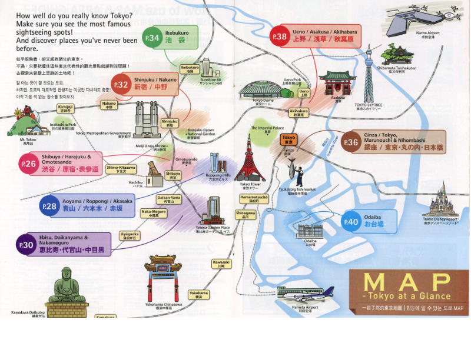

Introduction:
As fall semester comes to an end, my family and I started making plans for winter break. We recently decided to visit Tokyo in mid December, and I began looking into neighborhoods, food, activities, and places to stay. The amount of information online became overwhelming very quickly, and I found myself losing track of what was actually useful.
I wanted to see if using an LLM could make the process easier. Planning a trip involves many small decisions, and I was curious whether a model could organize the details in a way that felt manageable. Instead of sorting through multiple guides and half finished lists, I tried using the LLM as a starting point to see if it could help with pacing, suggestions, and early planning.
Prompt:
I am planning a family trip to Tokyo in mid December. Please create a detailed day by day itinerary that balances food, shopping, cultural sites, scenic experiences, and free time. We are a family that enjoys shopping, trying new foods, and exploring places with nice views, including seasonal lights or winter sightseeing. Christmas will be approaching during our trip, so please include winter or holiday themed activities that make sense for the season.
We are also very open to trying Michelin restaurants, well known bars, and high quality dining options. Along with that, include Japanese foods we especially enjoy such as soba, curry, tempura, and sushi. Please keep the overall budget in mind. The full trip budget for four people is 7020 dollars including flights, so recommend options that are realistic within this limit and point out where reservations or higher costs may apply.
Organize each day around one or two nearby neighborhoods to keep the pacing comfortable and reduce unnecessary travel. Include approximate travel times, transportation notes, and whether reservations are needed. Add indoor alternatives each day in case of cold weather.
After creating the main itinerary, produce two additional versions. One should be more food oriented and highlight restaurants and bars. The other should be more focused on cultural sites, holiday activities, and scenic locations. Keep both versions clear, realistic, and easy to follow.
Finally, evaluate all versions of the itinerary. Point out anything that may not make sense for winter or for our budget and suggest adjustments that would make the trip smoother.
Response:
Absolutely! Below is a detailed Tokyo family trip itinerary designed for mid-December, balancing food, shopping, culture, scenic winter experiences, and downtime — all while being mindful of your overall $7020 trip budget for four people, including flights.
Let’s assume:
- Flights cost around $800/person round-trip = $3200
- That leaves approx. $3820 for 4 people for accommodation, food, transportation, and attractions
- Daily budget: ~$270/day for 5–6 full days
We’ll prioritize affordable luxury: great food at moderate prices, attractive free/low-cost attractions, and occasional splurges like one Michelin-star meal and holiday experiences.
MAIN ITINERARY – Balance of Food, Culture, Shopping, and Scenic Experiences
(Day-by-Day Plan for Mid-December)
🗓️ Day 1 – Arrival & Shinjuku: Initial Taste of Tokyo
Accommodation: Check into hotel in Shinjuku area (good base for transit, shopping, food)
Recommended: Tokyu Stay Shinjuku or Hotel Sunroute Plaza (~$120–$150/night, central & family-friendly)
- Afternoon:
- Arrive & settle
- Explore Omoide Yokocho (old alleyway with yakitori stalls and izakayas — dinner option)
- Walk around Shinjuku Southern Terrace – pretty illuminations
- Dinner: Torikizoku (casual, great yakitori & affordable, ~$10–15/person)
- Optional: Tokyo Metropolitan Government Building (free observation deck, great nighttime view)
🕒 Walkable
Indoor Alternative: Explore LUMINE or Takashimaya department stores nearby
📅 Day 2 – Asakusa & Ueno: Historical Tokyo & Local Eats
- Morning: - Visit Senso-ji Temple (Tokyo’s oldest, festive during holiday season) - Nakamise-dori Shopping Street (traditional snacks/souvenirs)
- Lunch: Eat soba at Namiki Yabusoba (historic soba shop, ~$10–15/person)
- Afternoon: - Ueno Park stroll (even in winter, beautiful with clear skies) - Tokyo National Museum (indoor option if cold, ¥1000/adult)
- Evening: - Head to Ameyoko Shopping Street (street food, snacks, casual clothes deals) - Dinner: Gyukatsu Motomura (Japanese beef cutlet, ~$15–20/person)
🕒 Train: ~15 min (Asakusa to Ueno by Ginza Line)
Reservations: Not needed, but arrive early to avoid dinner queues
📅 Day 3 – Shibuya & Omotesando: Youth Culture + Christmas Lights
- Morning: - Shibuya Crossing + Hachiko Statue - LOFT & Shibuya 109 for fun shopping
- Harajuku’s Takeshita Street
- Lunch: Curry at Moe Moe Curry (fun, trendy curry spot) or CoCo Ichibanya
- Afternoon: - Stroll Omotesando – enjoy upscale shopping & luxurious holiday decorations - Visit Omotesando Hills (mall + seasonal lights)
- Snack Break: Luke’s Lobster or crepes from Marion Crepes
- Optional: TeamLab Planets (if desired – immersive digital art, ¥3200/adult, very popular!)
- Dinner: Udon or sushi near hotel; Ichiran Ramen also great (individual booths)
🕒 Shinjuku → Shibuya → Omotesando: ~10–15 min total by train
Indoor Option: Omotesando Hills / Tokyu Plaza Omotesando
📅 Day 4 – Tsukiji + Ginza: Foodie Morning & High-End Evening
- Morning: - Tsukiji Outer Market (sample tamagoyaki, grilled seafood, matcha, melonpan, etc.) - Early sushi at Sushi Zanmai or Tsukiji Itadori (not Michelin, but quality & affordable 🙂)
- Afternoon: - Ginza: explore Uniqlo flagship, Matsuya department store, Itoya (stationery heaven) - Relaxing break at Hibiya Park if sunny
🛍️ Free illumination displays at night in Marunouchi & Tokyo Station area
- Dinner: Michelin Bib Gourmand Tempura at Tempura TenKichi Ginza (~¥2500–3200/person)
🕒 Train: ~15 min Shinjuku to Tsukiji (Oedo Line), walk to Ginza
Reservations: Recommended for tempura restaurant if specific timing wanted
📅 Day 5 – Odaiba: Tech + View + Shopping (good for colder weather)
- Morning: - Visit TeamLab Planets (if didn’t on Day 3) - Palette Town / DiverCity (shopping, giant Gundam)
- Afternoon: - Odaiba Seaside Park (scenic views of Rainbow Bridge & Statue of Liberty) - Relax at Oedo Onsen Monogatari (Japanese hot spring theme park/baths)
- Dinner: Curry dishes or izakaya set meals at DiverCity
- Evening: - View Tokyo Bay + rainbow bridge lit up from Decks area = beautiful night photos
🕒 Train: Shinjuku to Odaiba = ~30–40 mins (via Yurikamome Line – scenic monorail!)
Reservations: Needed for TeamLab; book ahead
📅 Day 6 – Free day or Day Trip (Yokohama / Ghibli Museum)
Option A – Yokohama Day Trip (~40 mins):
- Visit Minato Mirai, Cup Noodles Museum, Cosmo World, Chinatown
- Enjoy Christmas Market at Red Brick Warehouse
Option B – Stay in Tokyo:
- Visit Akihabara (electronics + anime), relax in cafés
- Optional: Ghibli Museum reservation (pre-reservation only, buy 1–2 months ahead)
Dinner: Final nice meal — consider sushi at Sushi Tokyo Ten (modern conveyor belt, ~$30 each)
🕒 Travel ~40 mins (if Yokohama); or local JR train for in-city
Farewell Night: Bar Benfiddich (Shinjuku, renowned artisanal cocktails), or rooftop bar at Park Hyatt (single drink ~$15–20)
Indoor Option: Tokyo Skytree Solamachi Mall + Sumida Aquarium
📅 Departure Day – Souvenirs & Say Goodbye
- Light breakfast at hotel or conbini
- Optional stop at Don Quijote Shinjuku or airport shopping for last-minute gifts
Estimated Total Expense Breakdown (4 people):
- Flights: $3200
- Accommodation (6 nights x ~$140): ~$840
- Transport (Suica Pass/top-ups, regional trains, monorails): ~$120 total
- Attractions & reservations: ~$250 total (includes TeamLab, museums, etc.)
- Meals (~$20-25 avg/day/person): ~$600–$700
- One fancy dinner or bar night: ~$200
- Souvenirs etc.: remaining ~$500
💡 Within budget (~$3800 ground costs), with optional upgrades noted
——————
🍱 FOOD-ORIENTED VERSION
Key Differences: - Focuses highly on trying different types of Japanese cuisine and well-rated eateries - Swaps in food halls, breakfast spots, and street food stops
Recommended Budget increase for food: +$100–$200 (still within bounds)
🗓️ Highlights:
- Day 1: Dinner Omoide Yokocho (yakitori), Finish with Tori Katsu from Teyandei restaurant (hidden gem)
- Day 2: Nakiryu (Michelin-star ramen), Ueno yokocho izakaya
- Day 3: Uogashi Nihon-Ichi standing sushi bar, Harajuku crepes, Ichibanya curry dinner
- Day 4: Tempura lunch (Tsunahachi), Department store depachika food floors in Ginza
- Day 5: TeamLab + sushi at Sushi Daiwa
- Day 6: Soba lunch & Ghibli gift shop sweets, drinks at Bar Orchard Ginza
- Bonus: Book lunch at Narisawa (2-star) or Kanda if budget stretches
🍱 Emphasis: Each day includes at least 2 diverse meals including soba, curry, sushi, izakaya/anime cafés, and Michelin bites
——————
🏯 CULTURE + SEASONAL VERSION
Key Differences: - Prioritizes cultural sites, night views, scenic and seasonal contexts (alleyways, parks, museums, shrines) - Includes visits to illuminations & observatories
- Slight downgrade in food budget to accommodate more entrance fees
🗓️ Highlights: - Day 1: Observation deck + Shinjuku Southern Terrace lights
- Day 2: Extended temple visit + National Museum, Kappabashi shopping street for traditional goods
- Day 3: Meiji Shrine; evening at Roppongi Midtown for illuminations
- Day 4: Tokyo Station to Imperial Palace’s East Gardens; Tokyo Christmas Market at Hibiya Park
- Day 5: Ghibli Museum OR Edo-Tokyo Open Air Museum; finish with Nakameguro River winter light display
- Day 6: Day trip to Nikko OR Kamakura if weather’s good; or visit Hamarikyu Garden and enjoy teatime in tea house
🏯 Emphasis: Educative and rich in local tradition + holiday spirit + walkable sightseeing
——————
✅ EVALUATION — What Works / Adjustments Needed
Budget Risks: - Michelin/TeamLab dining for 4 can get tight. Just one Michelin or upscale meal is advisable unless sacrificing another activity. - Transit costs minor, but booking JR multi-day pass not needed — just use PASMO/Suica
Weather Concerns: - All versions include indoor options on cold/rainy days (e.g., department store food halls, museums, art spaces) - Illuminations fine for winter nights, but encourage layering/early dinners to limit long outdoor periods
Hotel Placement: - Staying around Shinjuku or Ueno recommended to cut travel time, plus good access to budget food & routes
Reservation Notes: - TeamLab Planets = Required - Ghibli Museum = Required (book >1 month prior) - Michelin restaurants = Required, ideally for lunch (cheaper!)
Tip: - Consider combining lunch splurges with simpler dinners to stay on budget
FINAL RECOMMENDATION:
Start with the Main Version – adjust one night for a fine dining inclusion, and keep the culture itinerary as backup in case someone’s less into food. Plan TeamLab and 1 Michelin meal in advance, and you’re set for a magical wintery Japanese escape!
Let me know if you’d like me to build a Google Sheet plan & budget tracker, or find specific restaurant links—happy to assist!
Reflection:
Reading through the itinerary the LLM created, I realized how different its suggestions were from what I had been finding on my own. A lot of the online guides I looked at earlier were either too broad, too repetitive, or focused on trends that did not feel current. The model’s version was not perfect either, and I could tell that some of the recommendations might not be fully up to date. Even so, it was helpful in a different way. Instead of giving me random lists of places, it organized the trip into a structure that made sense and matched the way my family actually travels.
What I appreciated most was the pacing. The itinerary grouped activities by neighborhood, made note of travel times, and included indoor alternatives for cold weather. That already made the planning process feel more manageable. Even if I end up changing some of the restaurants or attractions, the overall flow of the trip is now much clearer, and I can adjust the specifics without starting over.
I also liked the travel tips included at the end. The notes on budgeting, reservations, and transportation helped me understand where the real constraints are and which things need to be booked ahead of time. Those reminders felt practical and grounded, and they gave me a better sense of what to prioritize before the trip.
I was also surprised by how easily the LLM balanced shopping, food, and sightseeing. It captured the priorities I mentioned and created versions of the trip that leaned more toward food or more toward cultural sites. The flexibility made it easier to compare different types of days and figure out what fits us best.
Overall, the itinerary did not replace the research I still need to do, but it made the early stages of planning much less overwhelming. It helped me understand the layout of the city, how much we can reasonably fit into a day, and how to organize the trip without wasting time. Even with some outdated suggestions, having the structure in place made everything else feel easier to handle.